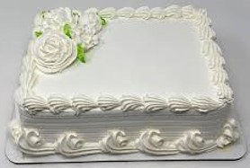
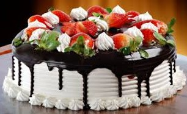
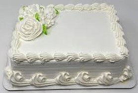
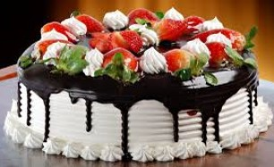

Pasteles frescos y deliciosos para toda ocasión!
 



Somos los mejores en Venta de Pasteles, creamos especialidades en repostería, pan dulce y blanco para que acompañes de cualquier platillo. Trabajamos con materia prima de gran nivel para que disfrutes en cada bocado.
En Pastelería La Sabrosa tenemos más de 30 años de experiencia y tradición que nos avalan en Venta de Pasteles y como una de las más prestigiadas pastelerías en Ciudad Obregón, donde encontrarás desde un calientito panblanco para merendar o desayunar, hasta pan de dulce o diversos productos de repostería con los que podrás satisfacer tu antojo.
Por ser creadores de deliciosos postres y repostería en general, podemos decorar pasteles con una temática en específico, para que celebres con estilo cualquier ocasión, utilizamos ingredientes específicos, guiándonos por la receta de tradición.
Pregunta por las deliciosas especialidades en fechas especiales para que hagas tu pedido, visítanos y conoce los diversos productos que a diario horneamos, te estaremos esperando para atenderte en forma personalizada.